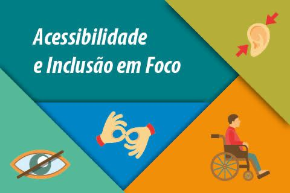

Acessibilidade Digital
Esta aula aborda os conceitos fundamentais de acessibilidade digital, incluindo boas práticas para tornar a web mais inclusiva.
📝 Transcrição
Acessibilidade e Inclusão: Caminhos para uma Sociedade Mais Justa Acessibilidade e inclusão são pilares fundamentais para a construção de uma sociedade mais justa, democrática e igualitária. A acessibilidade diz respeito à eliminação de barreiras físicas, tecnológicas, comunicacionais e atitudinais, permitindo que todas as pessoas, independentemente de suas condições físicas, sensoriais ou cognitivas, possam participar plenamente da vida em sociedade. Já a inclusão vai além: trata-se de garantir que todas as pessoas sejam reconhecidas, respeitadas e valorizadas em sua diversidade. Isso significa criar ambientes — seja na escola, no trabalho, nos serviços públicos ou na internet — que acolham as diferenças e promovam a participação ativa de todos. Investir em acessibilidade e práticas inclusivas não beneficia apenas pessoas com deficiência. Crianças, idosos, pessoas com mobilidade reduzida temporária, entre outros grupos, também se beneficiam de um mundo mais acessível. Rampas, sinalização adequada, legendas em vídeos, leitura de telas e linguagem simples são exemplos de recursos que tornam o cotidiano mais democrático. Portanto, acessibilidade e inclusão não são favores ou concessões, mas sim direitos fundamentais. Promovê-los é um compromisso ético e social de todos nós.
📄 Material Complementar
✅ Checklist de Acessibilidade 📍 Acessibilidade Física Há rampas de acesso com inclinação adequada? As portas e corredores são largos o suficiente para cadeiras de rodas? Há sinalização tátil no chão (piso tátil)? Existem banheiros adaptados e acessíveis? O local possui vagas reservadas para pessoas com deficiência? 🧏♀️ Acessibilidade Comunicacional Há materiais disponíveis em braille ou áudio? O local ou serviço oferece atendimento em Libras? A sinalização no ambiente é clara, com pictogramas compreensíveis? Informações importantes estão acessíveis em linguagem simples? 💻 Acessibilidade Digital O site ou aplicativo é compatível com leitores de tela? Os links, botões e menus são acessíveis por teclado? Imagens têm texto alternativo (alt text)? Os vídeos possuem legendas e/ou intérprete de Libras? O contraste entre texto e fundo é adequado para leitura? 👥 Acessibilidade Atitudinal Os colaboradores receberam treinamento sobre inclusão? Existe empatia e respeito ao se comunicar com pessoas com deficiência? As diferenças são acolhidas e valorizadas no ambiente? 📚 Acessibilidade Metodológica (especialmente em escolas e cursos) Os materiais didáticos são adaptados às necessidades dos alunos? Há flexibilidade na forma de avaliação e participação? O plano pedagógico inclui estratégias inclusivas?
📬 Dúvidas?
Envie sua dúvida para Unily@gmail.com.br